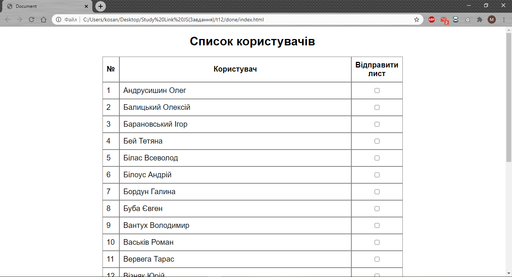
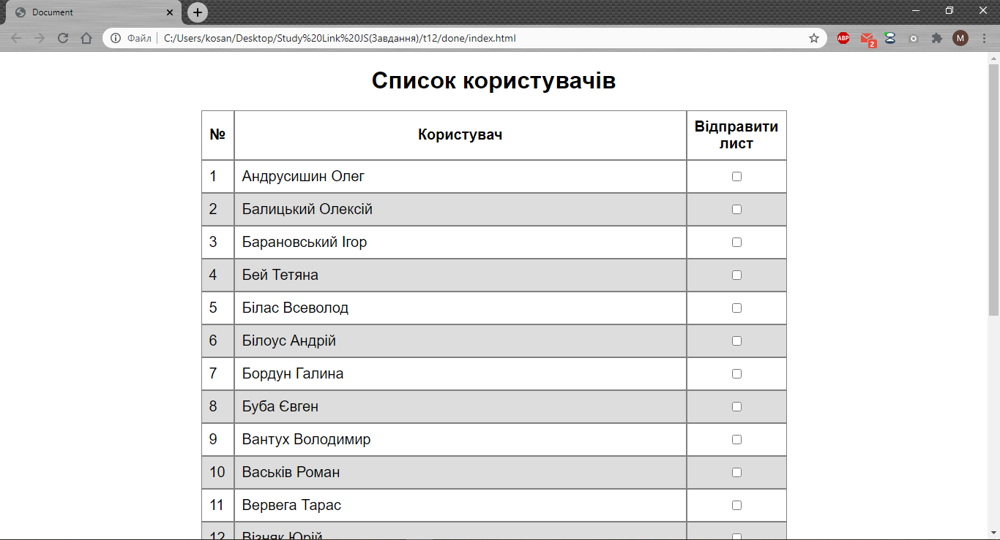
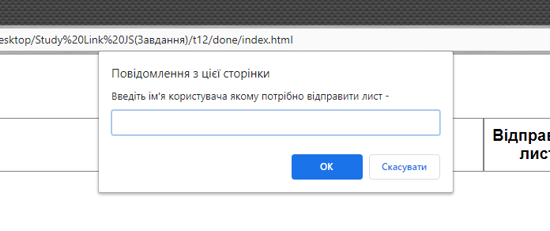
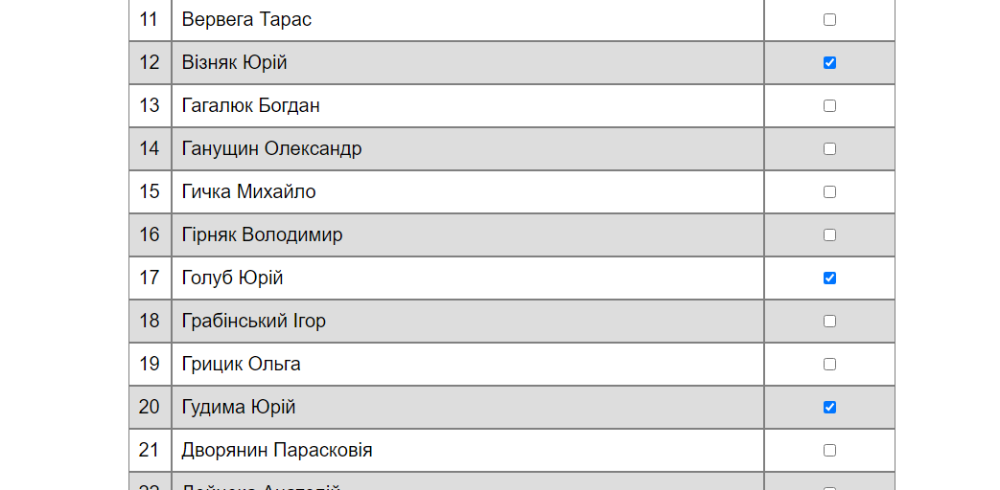
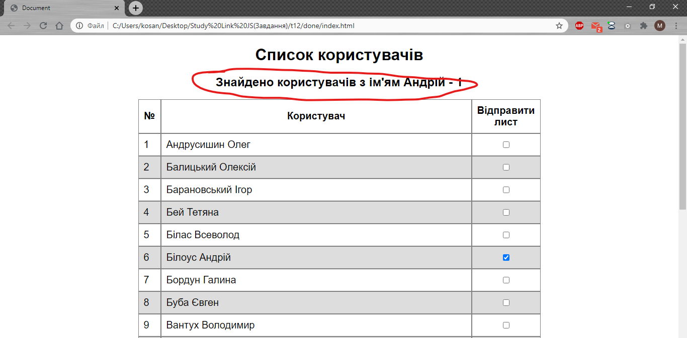

Тема 12. Модуль
1. Використайтe масив із іменами користувачів та побудуйте таблицю. Масив тут

2. Кожен другий рядок повинен мати інше забарвлення.

3. Через функцію prompt() введіть ім'я. Поставте галку напроти користувачів з цим ім'ям. ( Використайте метод .includes() )


4. Виведіть кількість користувачів з таким ім'ям перед таблицею.
